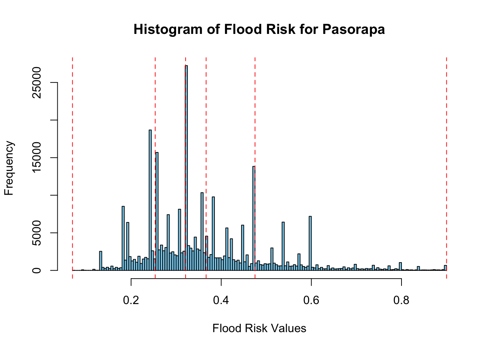

This research presents a low-cost and flexible methodology for mapping flood hazard and assessing resulting risk. The methodology is generic and can be customized for freely available data with global coverage, allowing for worldwide risk assessment. Region-specific information can be added to the default workflow when available.
Floods are a significant global hazard, posing threats to both human societies and natural ecosystems. The increase in flood occurrences is caused by the interaction between climate variations and changes in land-use patterns. These dynamics put significant stress on river systems, leading to significant changes in river morphology (Hagos et al. 2022).
This study aims to evaluate flood risk and identify inundation zones in the Valle Alto region of Cochabamba, including Aiquile, Pasorapa, Pojo, and Totoro. The genesis of floods is influenced by various factors such as soil properties, terrain slope, elevation, drainage density, and land cover characteristics. In Bolivia, some of these factors were included in the analysis framework due to limited data availability.
The analytic hierarchy process was used to determine the relative weights assigned to each contributing factor, incorporating insights from public institutions and expert consensus. The acquired data was processed in the R-Studio environment to construct a comprehensive flood hazard map.
The aim of this study is to inform evidence-based decision-making processes, ultimately enhancing the resilience of communities and ecosystems to flood-related hazards.
Code
| Source | Description ||------|-----------|| [Applied Water Science](https://link.springer.com/article/10.1007/s13201-022-01674-8) | Study on "Flood hazard assessment and mapping using GIS integrated with multi-criteria decision analysis in upper Awash River basin, Ethiopia". || [MDPI](https://www.mdpi.com/2073-4441/11/11/2371/htm) | Flexible methodology and toolbox for flood risk mapping worldwide. || [Sustainability](https://www.mdpi.com/2071-1050/14/8/4483) | Study on "Urban Flood-Risk Assessment and Management Using Integrated Multi-Parameter Decision-Making Approach and Geospatial Techniques". || [Springer](https://link.springer.com/referenceworkentry/10.1007/978-981-16-8800-3_177-1) | Risk Mapping in Managing Flood Vulnerability in Disaster Management. || [MDPI](https://www.mdpi.com/2071-1050/14/6/3251) | Flood Hazard and Risk Mapping by Applying an Explainable Machine Learning Framework Using Satellite Imagery and GIS Data. || [MDPI](https://www.mdpi.com/2073-4441/11/11/2371) | Flood Risk Mapping Worldwide: A Flexible Methodology and Toolbox. |
In order to conduct this Multicriteria Analysis, a comparable approach to Hagos et al. (2022) has been undertaken. The analysis employs numerous raster and vector layers, integrating weighted factors. The entire project is conducted within the R-Studio environment. Key packages utilized in achieving the final results are listed in R-Studio Libraries, providing essential functions for the conducted calculations. The following data has been used.
Table 3.1 shows the data used in order to conduct the Multicriteria Analysis on the four municipalities in the Cono Sur Region in Cochabamba, Bolivia.
Table 3.2 presents the classification and evaluation of various criteria for drought exposure, illustrating the factors influencing each classification. This table outlines the criteria and their corresponding classifications as follows.
The subsequent sections present the reclassified data for four municipalities in the state of Cochabamba. These sections detail the process of cleaning and further processing the raw data, with relevant code snippets linked to the Appendix for reference.
Code
# Creating a tableshapes <-c("Political Map", "River Data", "Precipitation", "DEM (Inclination)")data_type <-c("Vector", "Vector", "Raster (30 s)", "Raster (15 s)")sources <-c("[gadm.org](https://gadm.org/download_country.html)","@linke2019global","@fick2017worldclim", "[Hydrosheds.org](https://www.hydrosheds.org/hydrosheds-core-downloads)")period <-c("2024", "2013", "1970-2000", "2013")# Repeat the sources based on the number of shapesrepeated_sources <-rep(sources, length.out =length(shapes))# Create the data framedata <-data.frame(Data = shapes, Types = data_type, Source = repeated_sources, Period_Year = period)colnames(data) <-c("Data", "Types", "Source", "Period/Year")kable(data)
# River Data## 200 meters Buffer River databuffer_river <- sf::st_buffer(Pasorapa, 200)
3.2.1 River Data
The data utilized aimed to estimate the distance to rivers, serving as a proxy for assessing the likelihood of drought occurrences. The underlying assumption was that greater distances from rivers correspond to increased drought probabilities. To calculate distances, the terra::distance function was employed on the river shapefiles associated with various municipalities. Detailed processing steps are outlined in the subsequent chapter of the Appendix.
The reclassification has been calculated according to Table 3.2. Defining the classification values Gao et al. (2023) has been using different values in order to classify and evaluate drought exposure, hazard factors, vulnerability, and mitigation capacity.
Code
river_crop <-read_sf("river_crop.shp")buffer_river <-st_buffer(river_crop, 100)# Create an empty raster to rasterize intoempty_raster <-raster(extent(buffer_river), resolution =c(0.0008333333, 0.0008333333))# Rasterizeriver_raster <- terra::rasterize(buffer_river, empty_raster, field ="CATCH_SKM")# , background = 0# calc into %river_raster <- (river_raster /100)# River## crop and mask demriver_crop <- terra::crop(river_raster, Pasorapa)river_mask <-mask(river_crop, Pasorapa)# plot(river_mask)
Code
# Define a common CRS for all your rasterscommon_crs <-"+proj=longlat +datum=WGS84 +no_defs +ellps=WGS84 +towgs84=0,0,0"# Assign the CRS to each rastercrs(river_raster) <-crs(river_subset_sp) <- common_crs# Calculate distances on the subsetdist_to_river <- terra::distance(river_mask)# writeRaster(dist_to_river, "dist_to_river_pasorapa.tif")dist_to_river <-rast("dist_to_river_pasorapa.tif")# Plot the distances rasterplot(dist_to_river)
Code
# Define areas of interestareas <-list(pasorapa = Pasorapa,aiquile = Aiquile,totora = totora,pojo = pojo)# Define river distance raster filesriver_rasters <-list(pasorapa ="dist_to_river_pasorapa.tif",aiquile ="dist_to_river_aiquile.tif",totora ="dist_to_river_totora.tif",pojo ="dist_to_river_pojo.tif")# reclass# Create a tibble with the reclassification tablereclass_table_river <-tribble(~from, ~to, ~becomes,5000, Inf, 0, 2000, 5000, 0.25, 700, 2000, 0.5, 200, 700, 0.75, -Inf, 200, 1)# Common CRS for all rasterscommon_crs <-"+proj=longlat +datum=WGS84 +no_defs +ellps=WGS84 +towgs84=0,0,0"# Loop through areas of interestfor (area_name innames(areas)) {# Load river distance raster dist_to_river <-rast(river_rasters[[area_name]])# Assign common CRScrs(dist_to_river) <- common_crsst_crs(areas[[area_name]]) <- common_crs# Crop and mask river distance raster river_crop <-crop(dist_to_river, areas[[area_name]]) river_mask <-mask(river_crop, areas[[area_name]])# Reclassify the river distance raster river_reclassified <-classify(river_mask, reclass_table_river, include.lowest =TRUE, right =TRUE)# Assign to appropriate variableassign(paste0("river_reclassified_", area_name), river_reclassified)}
Code
# write / safe Raster# writeRaster(dist_to_river, "dist_to_river_pasorapa.tif")dist_to_river <-rast("dist_to_river_pasorapa.tif")# River## crop and mask demriver_crop <- terra::crop(dist_to_river, Pasorapa)river_mask <-mask(river_crop, Pasorapa)# reclass# Create a tibble with the reclassification tablereclass_table_river <-tribble(~from, ~to, ~becomes,5000, Inf, 0, 2000, 5000, 0.25, 700, 2000, 0.5, 200, 700, 0.75, -Inf, 200, 1)# Reclassify the slope raster based on the reclassification tableriver_reclassified_pasorapa <- terra::classify(river_mask, reclass_table_river, include.lowest =TRUE, right =TRUE)# kable(reclass_table_river)# write/ safe Rasterdist_to_river <-rast("dist_to_river_aiquile.tif")common_crs <-"+proj=longlat +datum=WGS84 +no_defs +ellps=WGS84 +towgs84=0,0,0"# Assign the CRS to each rastercrs(dist_to_river) <- common_crsst_crs(Aiquile) <- common_crs# River## crop and mask demriver_crop <- terra::crop(dist_to_river, Aiquile)river_mask <-mask(river_crop, Aiquile)# Reclassify the slope raster based on the reclassification tableriver_reclassified_aiquile <- terra::classify(river_mask, reclass_table_river, include.lowest =TRUE, right =TRUE)# pojodist_to_river_pojo <-rast("dist_to_river_pojo.tif")river_reclassified_pojo <- terra::classify(dist_to_river_pojo, reclass_table_river, include.lowest =TRUE, right =TRUE)# totoradist_to_river_totora <-rast("dist_to_river_totora.tif")river_reclassified_totora <- terra::classify(dist_to_river_totora, reclass_table_river, include.lowest =TRUE, right =TRUE)
### Downstream loop calc.# Function to find all downstream rivers for a given river IDfind_downstream <-function(start_id, data) { downstream_rivers <-vector(mode ="numeric") current_id <- start_idwhile (!is.na(current_id)) { downstream_rivers <-c(downstream_rivers, current_id) current_id <- data[data$river_id == current_id, "NEXT_DOWN"] }return(downstream_rivers)}# Usage: Replace 'start_id' with your initial river IDstart_id <-61259906result <-find_downstream(start_id, river_crop)print(result)
Code
### terra::distance calc.river_crop <-read_sf("river_crop.shp")buffer_river <-st_buffer(river_crop, 100)# Create an empty raster to rasterize intoempty_raster <-raster(extent(buffer_river), resolution =c(0.0008333333, 0.0008333333))# Rasterizeriver_raster <- terra::rasterize(buffer_river, empty_raster, field ="CATCH_SKM", background =0)# calc into %river_raster <- (river_raster /100)plot(river_raster)
3.2.2 Precipitation Data
The following Data provided by Fick and Hijmans (2017) resembles Precipitation Data on a 30 Arc Second Accuracy. The format provides one Raster-Layer for each month.
Twelve raster layers have been aggregated to generate a unified raster layer, facilitating subsequent classification. The outcome is a comprehensive raster layer encompassing the total precipitation for the average year spanning from 1970 to 2000. The utilized code is available in the Appendix In the reclassification process, values were partitioned into five equally distributed groups based on frequency, with each group representing 20% of the total data frequency. The distribution and grouping methodology are illustrated in Figure 3.2. The reclassification has been calculated according to Table 3.2.
Code
precip_pasorapa <-rast("sum_raster_pasorapa.tif")precip_aiquile <-rast("sum_raster.tif")precip_pojo <-rast("precip_pojo.tif")precip_totora <-rast("precip_totora.tif")precip_todos <-rast("precip_todos.tif")# Reclass# Create a tibble with the reclassification tablereclass_table_precip <-tribble(~from, ~to, ~becomes,1058.2, Inf, 1, 640, 1058.2, 0.75, 571, 640, 0.5, 513.8, 571, 0.25, -Inf, 513.8, 0)# Reclassify the slope raster based on the reclassification tableprecip_reclassified_pasorapa <- terra::classify(precip_pasorapa, reclass_table_precip, include.lowest =TRUE, right =TRUE)precip_reclassified_aiquile <- terra::classify(precip_aiquile, reclass_table_precip, include.lowest =TRUE, right =TRUE)precip_reclassified_pojo <- terra::classify(precip_pojo, reclass_table_precip, include.lowest =TRUE, right =TRUE)precip_reclassified_totora <- terra::classify(precip_totora, reclass_table_precip, include.lowest =TRUE, right =TRUE)# todosprecip_reclassified_todos <- terra::classify(precip_todos, reclass_table_precip, include.lowest =TRUE, right =TRUE)
?(caption)
Code
# Specify the number of breaks (bins)num_breaks <-5break_values <-quantile(values(precip_todos, na.rm =TRUE), probs =seq(0, 1, length.out = num_breaks +1))# Create the histogram with equal-frequency breakshist(values(precip_todos), breaks ="FD", main ="Histogram of Data Distribution", xlab ="Precipitation (mm)", col ="skyblue", border ="black", plot =TRUE)# Add vertical lines to represent the breaksabline(v =quantile(values(precip_todos, na.rm =TRUE), probs =seq(0, 1, length.out = num_breaks +1)), col ="red", lty =2)
Figure 3.2: Distribution of the Precipitation Data
Figure 3.3: Reclassification Result of the Precipitation Data
3.2.3 DEM (Inclination) Data
The provided Digital Elevation Model (DEM) consists of raster values showcasing variations in altitudes. These altitude values where converted into slope data using the terra::terrain -function from the Terra package. The reclassification has been calculated according to Table 3.2.
Subsequently, the slope data was categorized into varying degrees of possibility of Flood in percent based on their inclination. For a detailed view of the reclassification code, please refer to the Appendix.
Figure 3.4: Reclassification of DEM derived Inclination
3.3 Results Flood Risk
Code
### Aiquile# Resample aspect raster to match the extent and resolution of min_temp_pasorapa_reclassifiedprecip_reclassified <- terra::resample(precip_reclassified_aiquile, dem_reclassified_aiquile)river_reclassified <- terra::resample(river_reclassified_aiquile, precip_reclassified)# Adjusted weightsweight_river <-0.25weight_dem <-0.35weight_precip <-0.4# Perform the adjusted weighted combinationfinal_raster <- weight_river * river_reclassified + weight_precip * precip_reclassified + weight_dem * dem_reclassified_aiquilefinal_raster_aiquile <- final_raster### Pojo# Resample aspect raster to match the extent and resolution of min_temp_pasorapa_reclassifiedprecip_reclassified <- terra::resample(precip_reclassified_pojo, dem_reclassified_pojo)river_reclassified <- terra::resample(river_reclassified_pojo, precip_reclassified)# Perform the adjusted weighted combinationfinal_raster <- weight_river * river_reclassified + weight_precip * precip_reclassified + weight_dem * dem_reclassified_pojofinal_raster_pojo <- final_raster### Pasorapa# Resample aspect raster to match the extent and resolution of min_temp_pasorapa_reclassifiedprecip_reclassified <- terra::resample(precip_reclassified_pasorapa, dem_reclassified_pasorapa)river_reclassified <- terra::resample(river_reclassified_pasorapa, precip_reclassified)# Perform the adjusted weighted combinationfinal_raster <- weight_river * river_reclassified + weight_precip * precip_reclassified + weight_dem * dem_reclassified_pasorapafinal_raster_pasorapa <- final_raster### Totora# Resample aspect raster to match the extent and resolution of min_temp_pasorapa_reclassifiedprecip_reclassified <- terra::resample(precip_reclassified_totora, dem_reclassified_totora)river_reclassified <- terra::resample(river_reclassified_totora, precip_reclassified)# Perform the adjusted weighted combinationfinal_raster <- weight_river * river_reclassified + weight_precip * precip_reclassified + weight_dem * dem_reclassified_totorafinal_raster_totora <- final_raster
Code
# Define the municipalitiesmunicipalities <-c("pojo", "pasorapa", "aiquile", "totora")# Set the number of breaks (bins)num_breaks <-5# Initialize an empty list to store numeric breaks for each municipalitynumeric_breaks_list <-list()# Loop over each municipalityfor (municipality in municipalities) {# Get the final raster data for the current municipality final_raster <-switch(municipality,pojo = final_raster_pojo,pasorapa = final_raster_pasorapa,aiquile = final_raster_aiquile,totora = final_raster_totora)# Compute the break values break_values <-quantile(values(final_raster, na.rm =TRUE), probs =seq(0, 1, length.out = num_breaks +1))# Store the numeric breaks in the list numeric_breaks_list[[municipality]] <-as.numeric(as.character(break_values))# Capitalize the first letter of the municipality name capitalized_municipality <-str_to_title(municipality)# Create the histogram with equal-frequency breakshist(values(final_raster), breaks ="FD", main =paste("Histogram of Flood Risk for", capitalized_municipality), xlab ="Flood Risk Values", col ="skyblue", border ="black", plot =TRUE)# Add vertical lines to represent the breaksabline(v = break_values, col ="red", lty =2)}
(a) Distribution of Pojo

(b) Distribution of Pasorapa
(c) Distribution of Aiquile
(d) Distribution of Totora
Figure 3.5: Data Distribution of the four Municipalities
Code
# Define breaks and labels for the reclassificationbreaks_list <-list(pojo = numeric_breaks_list$pojo,pasorapa = numeric_breaks_list$pasorapa,aiquile = numeric_breaks_list$aiquile,totora = numeric_breaks_list$totora)labels <-c("Muy bajo", "Bajo", "Moderado", "Alto", "Muy alto")# Initialize an empty list to store categorized rasters for each municipalitycategorized_rasters <-list()# Loop over each municipalityfor (municipality in municipalities) {# Get the final raster data for the current municipality final_raster <-switch(municipality,pojo = final_raster_pojo,pasorapa = final_raster_pasorapa,aiquile = final_raster_aiquile,totora = final_raster_totora)# Define breaks for the current municipality breaks <- breaks_list[[municipality]]# Cut the raster values into categorical factors factor_raster <-cut(values(final_raster), breaks = breaks, labels = labels, include.lowest =TRUE)# Change the name of the rasternames(final_raster) <-"Flood Risk"# Create a new raster with categorized values r_categorized <- final_rastervalues(r_categorized) <-as.factor(factor_raster)# Store the categorized raster in the list categorized_rasters[[municipality]] <- r_categorized}# Access categorized raster for a specific municipality# categorized_rasters$pasorapa
Figure 3.6: Result Flood Risk for each Municipality
Fick, Stephen E., and Robert J. Hijmans. 2017. “WorldClim 2: New 1km Spatial Resolution Climate Surfaces for Global Land Areas.”International Journal of Climatology 37 (12): 4302–15. https://www.worldclim.org/data/worldclim21.html.
Gao, Fengjie, Si Zhang, Rui Yu, Yafang Zhao, Yuxin Chen, and Ying Zhang. 2023. “Agricultural Drought Risk Assessment Based on a Comprehensive Model Using Geospatial Techniques in Songnen Plain, China.”Land 12 (June). https://doi.org/10.3390/land12061184.
Hagos, Yonas Gebresilasie, Tesfa Gebrie Andualem, · Mesenbet Yibeltal, · Mequanent, and Abathun Mengie. 2022. “Flood Hazard Assessment and Mapping Using GIS Integrated with Multi-Criteria Decision Analysis in Upper Awash River Basin, Ethiopia” 12: 148. https://doi.org/10.1007/s13201-022-01674-8.
Linke, Simon, Bernhard Lehner, Cynthia Ouellet Dallaire, Joyce Ariwi, Günther Grill, Manu Anand, Paul Beames, et al. 2019. “Global Hydro-Environmental Sub-Basin and River Reach Characteristics at High Spatial Resolution.”Scientific Data 6: 283. https://doi.org/10.1038/s41597-019-0300-6.
Source Code
---title: "Flood Risk"editor_options: chunk_output_type: consoleexecute: echo: true message: false warning: false---## Frame of Reference {#sec-sec-flood}This research presents a low-cost and flexible methodology for mapping flood hazard and assessing resulting risk. The methodology is generic and can be customized for freely available data with global coverage, allowing for worldwide risk assessment. Region-specific information can be added to the default workflow when available.Floods are a significant global hazard, posing threats to both human societies and natural ecosystems. The increase in flood occurrences is caused by the interaction between climate variations and changes in land-use patterns. These dynamics put significant stress on river systems, leading to significant changes in river morphology [@Hagos2022].This study aims to evaluate flood risk and identify inundation zones in the Valle Alto region of Cochabamba, including Aiquile, Pasorapa, Pojo, and Totoro. The genesis of floods is influenced by various factors such as soil properties, terrain slope, elevation, drainage density, and land cover characteristics. In Bolivia, some of these factors were included in the analysis framework due to limited data availability.The analytic hierarchy process was used to determine the relative weights assigned to each contributing factor, incorporating insights from public institutions and expert consensus. The acquired data was processed in the R-Studio environment to construct a comprehensive flood hazard map.The aim of this study is to inform evidence-based decision-making processes, ultimately enhancing the resilience of communities and ecosystems to flood-related hazards.```{r eval=FALSE}| Source | Description ||------|-----------|| [Applied Water Science](https://link.springer.com/article/10.1007/s13201-022-01674-8) | Study on "Flood hazard assessment and mapping using GIS integrated with multi-criteria decision analysis in upper Awash River basin, Ethiopia". || [MDPI](https://www.mdpi.com/2073-4441/11/11/2371/htm) | Flexible methodology and toolbox for flood risk mapping worldwide. || [Sustainability](https://www.mdpi.com/2071-1050/14/8/4483) | Study on "Urban Flood-Risk Assessment and Management Using Integrated Multi-Parameter Decision-Making Approach and Geospatial Techniques". || [Springer](https://link.springer.com/referenceworkentry/10.1007/978-981-16-8800-3_177-1) | Risk Mapping in Managing Flood Vulnerability in Disaster Management. || [MDPI](https://www.mdpi.com/2071-1050/14/6/3251) | Flood Hazard and Risk Mapping by Applying an Explainable Machine Learning Framework Using Satellite Imagery and GIS Data. || [MDPI](https://www.mdpi.com/2073-4441/11/11/2371) | Flood Risk Mapping Worldwide: A Flexible Methodology and Toolbox. |``````{r libraries}# read librarieslibrary(raster)library(terra)library(ggplot2)library(tmap)library(sf)library(dplyr)library(tibble)library(knitr)library(stringr)``````{r}# read databol <-read_sf("gadm41_BOL_3.shp", crs =4326)cocha <- bol %>%filter(NAME_1 =="Cochabamba")Pasorapa <- cocha %>%filter(NAME_3 =="Pasorapa")Aiquile <- cocha %>%filter(NAME_3 =="Aiquile")# newtotora <- cocha %>%filter(NAME_3 =="Totora")pojo <- cocha %>%filter(NAME_3 =="Pojo")# set extentall_municipalities <-rbind(Pasorapa, Aiquile, totora, pojo)# read dm-rasterdem <-rast("s20w070_dem.tif")```## Methodology of the Case StudyIn order to conduct this Multicriteria Analysis, a comparable approach to @Hagos2022 has been undertaken. The analysis employs numerous raster and vector layers, integrating weighted factors. The entire project is conducted within the R-Studio environment. Key packages utilized in achieving the final results are listed in [R-Studio Libraries](#sec-sec-libraries), providing essential functions for the conducted calculations. The following data has been used.@tbl-data-Pasorapa shows the data used in order to conduct the Multicriteria Analysis on the four municipalities in the Cono Sur Region in Cochabamba, Bolivia.@tbl-data-weights-def presents the classification and evaluation of various criteria for drought exposure, illustrating the factors influencing each classification. This table outlines the criteria and their corresponding classifications as follows.The subsequent sections present the reclassified data for four municipalities in the state of Cochabamba. These sections detail the process of cleaning and further processing the raw data, with relevant code snippets linked to the Appendix for reference.```{r table_shapes}#| label: tbl-data-Pasorapa#| tbl-cap: "Used Data in the Analysis"#| tbl-colwidths: [20, 20, 20, 20]# Creating a tableshapes <-c("Political Map", "River Data", "Precipitation", "DEM (Inclination)")data_type <-c("Vector", "Vector", "Raster (30 s)", "Raster (15 s)")sources <-c("[gadm.org](https://gadm.org/download_country.html)","@linke2019global","@fick2017worldclim", "[Hydrosheds.org](https://www.hydrosheds.org/hydrosheds-core-downloads)")period <-c("2024", "2013", "1970-2000", "2013")# Repeat the sources based on the number of shapesrepeated_sources <-rep(sources, length.out =length(shapes))# Create the data framedata <-data.frame(Data = shapes, Types = data_type, Source = repeated_sources, Period_Year = period)colnames(data) <-c("Data", "Types", "Source", "Period/Year")kable(data)``````{r}#| label: tbl-data-weights-def#| tbl-cap: "Classification and evaluation of drought exposure according to factors"#| tbl-colwidths: [20, 20, 20]# Creating a sample data framedata <-data.frame(Criteria =c("River Data", "Precipitation", "DEM (Inclination)"),`Very High`=c("<200", ">1058", "<10"),High =c("200-700", "640-1058", "10-20"),Moderate =c("700-2000", "571-640", "20-30"),Low =c("2000-5000", "514-571", "30-45"),`Very Low`=c(">5000", "<513.8", ">45"),`Weights`=c(2.5, 4, 3.5))# Visualizing the table with kablekable(data, align ="c")``````{r eval=FALSE, other_data}# Read data and crop to Pasorapa# read data ## shapes# veg <- read_sf("veg_nv_bol_geo.shp") # Vegetation# geo <- read_sf("Geologia.shp") # Geografia# geo <- read_sf("geologia.shp", crs = 4326) # Geografia# dsmw <- read_sf("DSMW.shp", crs = 4326)# other kind of vegetation# se_bo_geo <- read_sf("se_bo_geo.shp")# temperatur min# tmin01 <- rast("wc2.1_30s_tmin_01.tif")# tmin02 <- rast("wc2.1_30s_tmin_02.tif")# tmin03 <- rast("wc2.1_30s_tmin_03.tif")# tmin04 <- rast("wc2.1_30s_tmin_04.tif")# tmin05 <- rast("wc2.1_30s_tmin_05.tif")# tmin06 <- rast("wc2.1_30s_tmin_06.tif")# tmin07 <- rast("wc2.1_30s_tmin_07.tif")# tmin08 <- rast("wc2.1_30s_tmin_08.tif")# tmin09 <- rast("wc2.1_30s_tmin_09.tif")# tmin10 <- rast("wc2.1_30s_tmin_10.tif")# tmin11 <- rast("wc2.1_30s_tmin_11.tif")# tmin12 <- rast("wc2.1_30s_tmin_12.tif")# temperatur max# tmax01 <- rast("wc2.1_30s_tmax_01.tif")# tmax02 <- rast("wc2.1_30s_tmax_02.tif")# tmax03 <- rast("wc2.1_30s_tmax_03.tif")# tmax04 <- rast("wc2.1_30s_tmax_04.tif")# tmax05 <- rast("wc2.1_30s_tmax_05.tif")# tmax06 <- rast("wc2.1_30s_tmax_06.tif")# tmax07 <- rast("wc2.1_30s_tmax_07.tif")# tmax08 <- rast("wc2.1_30s_tmax_08.tif")# tmax09 <- rast("wc2.1_30s_tmax_09.tif")# tmax10 <- rast("wc2.1_30s_tmax_10.tif")# tmax11 <- rast("wc2.1_30s_tmax_11.tif")# tmax12 <- rast("wc2.1_30s_tmax_12.tif")# precipitacion# precip01 <- rast("wc2.1_30s_prec_01.tif")# precip02 <- rast("wc2.1_30s_prec_02.tif")# precip03 <- rast("wc2.1_30s_prec_03.tif")# precip04 <- rast("wc2.1_30s_prec_04.tif")# precip05 <- rast("wc2.1_30s_prec_05.tif")# precip06 <- rast("wc2.1_30s_prec_06.tif")# precip07 <- rast("wc2.1_30s_prec_07.tif")# precip08 <- rast("wc2.1_30s_prec_08.tif")# precip09 <- rast("wc2.1_30s_prec_09.tif")# precip10 <- rast("wc2.1_30s_prec_10.tif")# precip11 <- rast("wc2.1_30s_prec_11.tif")# precip12 <- rast("wc2.1_30s_prec_12.tif")## Satellite Data# sat_full <- rast("sat_full.tiff")# Land Use# land <- rast("Change_10S_070W.tif")# print(land, vp = grid::viewport(0.8, 0.185, width = 0.2, height = 0.45))``````{r Processing}# River Data## 200 meters Buffer River databuffer_river <- sf::st_buffer(Pasorapa, 200)```### River DataThe data utilized aimed to estimate the distance to rivers, serving as a proxy for assessing the likelihood of drought occurrences. The underlying assumption was that greater distances from rivers correspond to increased drought probabilities. To calculate distances, the **`terra::distance`** function was employed on the river shapefiles associated with various municipalities. Detailed processing steps are outlined in the subsequent chapter of the [Appendix](#sec-sec-river).The reclassification has been calculated according to @tbl-data-weights-def. Defining the classification values @Gao2023 has been using different values in order to classify and evaluate drought exposure, hazard factors, vulnerability, and mitigation capacity.```{r eval=FALSE}river_crop <-read_sf("river_crop.shp")buffer_river <-st_buffer(river_crop, 100)# Create an empty raster to rasterize intoempty_raster <-raster(extent(buffer_river), resolution =c(0.0008333333, 0.0008333333))# Rasterizeriver_raster <- terra::rasterize(buffer_river, empty_raster, field ="CATCH_SKM")# , background = 0# calc into %river_raster <- (river_raster /100)# River## crop and mask demriver_crop <- terra::crop(river_raster, Pasorapa)river_mask <-mask(river_crop, Pasorapa)# plot(river_mask)``````{r eval=FALSE}# Define a common CRS for all your rasterscommon_crs <-"+proj=longlat +datum=WGS84 +no_defs +ellps=WGS84 +towgs84=0,0,0"# Assign the CRS to each rastercrs(river_raster) <-crs(river_subset_sp) <- common_crs# Calculate distances on the subsetdist_to_river <- terra::distance(river_mask)# writeRaster(dist_to_river, "dist_to_river_pasorapa.tif")dist_to_river <-rast("dist_to_river_pasorapa.tif")# Plot the distances rasterplot(dist_to_river)``````{r}# Define areas of interestareas <-list(pasorapa = Pasorapa,aiquile = Aiquile,totora = totora,pojo = pojo)# Define river distance raster filesriver_rasters <-list(pasorapa ="dist_to_river_pasorapa.tif",aiquile ="dist_to_river_aiquile.tif",totora ="dist_to_river_totora.tif",pojo ="dist_to_river_pojo.tif")# reclass# Create a tibble with the reclassification tablereclass_table_river <-tribble(~from, ~to, ~becomes,5000, Inf, 0, 2000, 5000, 0.25, 700, 2000, 0.5, 200, 700, 0.75, -Inf, 200, 1)# Common CRS for all rasterscommon_crs <-"+proj=longlat +datum=WGS84 +no_defs +ellps=WGS84 +towgs84=0,0,0"# Loop through areas of interestfor (area_name innames(areas)) {# Load river distance raster dist_to_river <-rast(river_rasters[[area_name]])# Assign common CRScrs(dist_to_river) <- common_crsst_crs(areas[[area_name]]) <- common_crs# Crop and mask river distance raster river_crop <-crop(dist_to_river, areas[[area_name]]) river_mask <-mask(river_crop, areas[[area_name]])# Reclassify the river distance raster river_reclassified <-classify(river_mask, reclass_table_river, include.lowest =TRUE, right =TRUE)# Assign to appropriate variableassign(paste0("river_reclassified_", area_name), river_reclassified)}``````{r eval=FALSE}#| label: tbl-river-distance-Pasorapa#| tbl-cap: "Reclassification table of the River-Distance Data"# write / safe Raster# writeRaster(dist_to_river, "dist_to_river_pasorapa.tif")dist_to_river <-rast("dist_to_river_pasorapa.tif")# River## crop and mask demriver_crop <- terra::crop(dist_to_river, Pasorapa)river_mask <-mask(river_crop, Pasorapa)# reclass# Create a tibble with the reclassification tablereclass_table_river <-tribble(~from, ~to, ~becomes,5000, Inf, 0, 2000, 5000, 0.25, 700, 2000, 0.5, 200, 700, 0.75, -Inf, 200, 1)# Reclassify the slope raster based on the reclassification tableriver_reclassified_pasorapa <- terra::classify(river_mask, reclass_table_river, include.lowest =TRUE, right =TRUE)# kable(reclass_table_river)# write/ safe Rasterdist_to_river <-rast("dist_to_river_aiquile.tif")common_crs <-"+proj=longlat +datum=WGS84 +no_defs +ellps=WGS84 +towgs84=0,0,0"# Assign the CRS to each rastercrs(dist_to_river) <- common_crsst_crs(Aiquile) <- common_crs# River## crop and mask demriver_crop <- terra::crop(dist_to_river, Aiquile)river_mask <-mask(river_crop, Aiquile)# Reclassify the slope raster based on the reclassification tableriver_reclassified_aiquile <- terra::classify(river_mask, reclass_table_river, include.lowest =TRUE, right =TRUE)# pojodist_to_river_pojo <-rast("dist_to_river_pojo.tif")river_reclassified_pojo <- terra::classify(dist_to_river_pojo, reclass_table_river, include.lowest =TRUE, right =TRUE)# totoradist_to_river_totora <-rast("dist_to_river_totora.tif")river_reclassified_totora <- terra::classify(dist_to_river_totora, reclass_table_river, include.lowest =TRUE, right =TRUE)``````{r}#| label: fig-river#| fig-cap: "Reclassification River Distance"#| fig-width: 5#| fig-height: 5# change namenames(river_reclassified_pasorapa) <-"Flood Risk"# Color Palette in Rcolors <-c("darkgreen","lightgreen","yellow", "orange","red")colors_1 <-c("lightgreen","yellow", "orange","red")# # # Define the reclassification table# reclass_table_modify <- tribble(# ~from, ~to, ~becomes,# 0, 0, 0.25 # Reclassify 0 to 0.25# )# # # Reclassify the river_reclassified_pasorapa raster# river_reclassified_pasorapa <- classify(river_reclassified_pasorapa, reclass_table_modify, include.lowest = TRUE, right = TRUE)# viewtmap_mode("plot")tm_shape(all_municipalities) +tm_polygons() +tm_shape(river_reclassified_pasorapa) +tm_raster(palette = colors) +tm_shape(river_reclassified_aiquile) +tm_raster(legend.show =FALSE, palette = colors) +tm_shape(river_reclassified_totora) +tm_raster(legend.show =FALSE, palette = colors) +tm_shape(river_reclassified_pojo) +tm_raster(legend.show =FALSE, palette = colors_1) +tm_shape(all_municipalities) +tm_borders(lwd =2, col ="black") +tm_layout(frame =FALSE) +tm_text("NAME_3", size =0.7) +tm_scale_bar(breaks =c(0, 5, 10), text.size =0.9, position =c("left")) +tm_compass(type ="4star", size =6, position =c("right", "top")) +tm_credits("Author: Johannes Quente", fontface ="italic", align ="right") +tm_graticules(alpha =0.3) +tm_layout(legend.text.size =1,legend.position =c("left", "bottom"),legend.outside =TRUE )``````{r eval=FALSE, Downstream_loop}### Downstream loop calc.# Function to find all downstream rivers for a given river IDfind_downstream <-function(start_id, data) { downstream_rivers <-vector(mode ="numeric") current_id <- start_idwhile (!is.na(current_id)) { downstream_rivers <-c(downstream_rivers, current_id) current_id <- data[data$river_id == current_id, "NEXT_DOWN"] }return(downstream_rivers)}# Usage: Replace 'start_id' with your initial river IDstart_id <-61259906result <-find_downstream(start_id, river_crop)print(result)``````{r eval= FALSE}### terra::distance calc.river_crop <-read_sf("river_crop.shp")buffer_river <-st_buffer(river_crop, 100)# Create an empty raster to rasterize intoempty_raster <-raster(extent(buffer_river), resolution =c(0.0008333333, 0.0008333333))# Rasterizeriver_raster <- terra::rasterize(buffer_river, empty_raster, field ="CATCH_SKM", background =0)# calc into %river_raster <- (river_raster /100)plot(river_raster)```\newpage### Precipitation DataThe following Data provided by @fick2017worldclim resembles Precipitation Data on a 30 Arc Second Accuracy. The format provides one Raster-Layer for each month.Twelve raster layers have been aggregated to generate a unified raster layer, facilitating subsequent classification. The outcome is a comprehensive raster layer encompassing the total precipitation for the average year spanning from 1970 to 2000. The utilized code is available in the [Appendix](#sec-sec-precip) In the reclassification process, values were partitioned into five equally distributed groups based on frequency, with each group representing 20% of the total data frequency. The distribution and grouping methodology are illustrated in @fig-hist-precip. The reclassification has been calculated according to @tbl-data-weights-def.```{r}#| label: tbl-precipitation#| tbl-cap: "Reclassification table of the Precipitation Data"precip_pasorapa <-rast("sum_raster_pasorapa.tif")precip_aiquile <-rast("sum_raster.tif")precip_pojo <-rast("precip_pojo.tif")precip_totora <-rast("precip_totora.tif")precip_todos <-rast("precip_todos.tif")# Reclass# Create a tibble with the reclassification tablereclass_table_precip <-tribble(~from, ~to, ~becomes,1058.2, Inf, 1, 640, 1058.2, 0.75, 571, 640, 0.5, 513.8, 571, 0.25, -Inf, 513.8, 0)# Reclassify the slope raster based on the reclassification tableprecip_reclassified_pasorapa <- terra::classify(precip_pasorapa, reclass_table_precip, include.lowest =TRUE, right =TRUE)precip_reclassified_aiquile <- terra::classify(precip_aiquile, reclass_table_precip, include.lowest =TRUE, right =TRUE)precip_reclassified_pojo <- terra::classify(precip_pojo, reclass_table_precip, include.lowest =TRUE, right =TRUE)precip_reclassified_totora <- terra::classify(precip_totora, reclass_table_precip, include.lowest =TRUE, right =TRUE)# todosprecip_reclassified_todos <- terra::classify(precip_todos, reclass_table_precip, include.lowest =TRUE, right =TRUE)``````{r}#| label: fig-hist-precip#| fig-cap: "Distribution of the Precipitation Data"# Specify the number of breaks (bins)num_breaks <-5break_values <-quantile(values(precip_todos, na.rm =TRUE), probs =seq(0, 1, length.out = num_breaks +1))# Create the histogram with equal-frequency breakshist(values(precip_todos), breaks ="FD", main ="Histogram of Data Distribution", xlab ="Precipitation (mm)", col ="skyblue", border ="black", plot =TRUE)# Add vertical lines to represent the breaksabline(v =quantile(values(precip_todos, na.rm =TRUE), probs =seq(0, 1, length.out = num_breaks +1)), col ="red", lty =2)``````{r}#| label: fig-precipitation#| fig-cap: "Reclassification Result of the Precipitation Data"#| fig-width: 5#| fig-height: 5colors <-c("darkgreen","lightgreen","yellow", "orange","red")# change namenames(precip_reclassified_todos) <-"Flood Risk"tm_shape(all_municipalities) +tm_polygons() +tm_shape(precip_reclassified_todos) +tm_raster(palette = colors) +tm_shape(all_municipalities) +tm_borders(lwd =2, col ="black") +tm_layout(frame =FALSE) +tm_text("NAME_3", size =0.7) +tm_scale_bar(breaks =c(0, 5, 10), text.size =0.9, position =c("left")) +tm_compass(type ="4star", size =6, position =c("right", "top")) +tm_credits("Author: Johannes Quente", fontface ="italic", align ="right") +tm_graticules(alpha =0.3) +tm_layout(legend.text.size =1,legend.position =c("left", "bottom"),legend.outside =TRUE )```\newpage### DEM (Inclination) DataThe provided Digital Elevation Model (DEM) consists of raster values showcasing variations in altitudes. These altitude values where converted into slope data using the `terra::terrain` -function from the Terra package. The reclassification has been calculated according to @tbl-data-weights-def.Subsequently, the slope data was categorized into varying degrees of possibility of Flood in percent based on their inclination. For a detailed view of the reclassification code, please refer to the [Appendix](#sec-sec-inclination).```{r eval=FALSE}# read data# Totoradem_reclassified_totora <-readRDS("dem_reclassified_totora.rds")# Aiquiledem_reclassified_aiquile <-readRDS("dem_reclassified_aiquile.rds")# Pasorapadem_reclassified_pasorapa <-readRDS("dem_reclassified_pasorapa.rds")# Pojodem_reclassified_pojo <-readRDS("dem_reclassified_pojo.rds")``````{r eval=FALSE}# DEM Pasorapa## crop and mask demdem_crop <- terra::crop(dem, Pasorapa)dem_mask_pasorapa <-mask(dem_crop, Pasorapa)terrain_pasorapa <-terrain(dem_mask_pasorapa)# DEM Aiquile## crop and mask demdem_crop <- terra::crop(dem, Aiquile)dem_mask_Aiquile <-mask(dem_crop, Aiquile)terrain_dem_mask_Aiquile <-terrain(dem_mask_Aiquile)# DEM Totora## crop and mask demdem_crop <- terra::crop(dem, totora)dem_mask_totora <-mask(dem_crop, totora)terrain_totora <-terrain(dem_mask_totora)# DEM Pojo## crop and mask demdem_crop <- terra::crop(dem, pojo)dem_mask_pojo <-mask(dem_crop, pojo)terrain_pojo <-terrain(dem_mask_pojo)# Create a tibble with the reclassification tablereclass_table_dem <-tribble(~from, ~to, ~becomes,0, 10, 1, # 0-10: Plano10, 20, 0.56, # 10-20: Mod. inclinado20, 30, 0.34, # 20-30: Inclinado30, 45, 0.2, # 30-45: Mod. empinado45, Inf,0.09# 45 and above: Fuert. empinado)# Assuming you have a slope raster 'slope_raster'# Reclassify the slope raster based on the reclassification tabledem_reclassified_pasorapa <-classify(terrain_pasorapa, reclass_table_dem, include.lowest =TRUE, right =TRUE)dem_reclassified_aiquile <-classify(terrain_aiquile, reclass_table_dem, include.lowest =TRUE, right =TRUE)dem_reclassified_totora <-classify(terrain_totora, reclass_table_dem, include.lowest =TRUE, right =TRUE)dem_reclassified_pojo <-classify(terrain_pojo, reclass_table_dem, include.lowest =TRUE, right =TRUE)``````{r}# Define areas of interestareas <-list(pasorapa = Pasorapa,aiquile = Aiquile,totora = totora,pojo = pojo)# Create a tibble with the reclassification tablereclass_table_dem <-tribble(~from, ~to, ~becomes,0, 10, 1, # 0-10: Plano10, 20, 0.56, # 10-20: Mod. inclinado20, 30, 0.34, # 20-30: Inclinado30, 45, 0.2, # 30-45: Mod. empinado45, Inf,0.09# 45 and above: Fuert. empinado)# Loop through areas of interestfor (area_name innames(areas)) {# Crop and mask dem dem_crop <-crop(dem, areas[[area_name]]) dem_mask <-mask(dem_crop, areas[[area_name]])# Calculate terrain terrain <-terrain(dem_mask)# Reclassify DEM dem_reclassified <-classify(terrain, reclass_table_dem, include.lowest =TRUE, right =TRUE)# Assign to appropriate variableassign(paste0("dem_reclassified_", area_name), dem_reclassified)}``````{r}#| label: fig-dem-inclination#| fig-cap: "Reclassification of DEM derived Inclination"#| fig-width: 5#| fig-height: 5# change namenames(dem_reclassified_aiquile) <-"Flood Risk"# viewtmap_mode("plot")tm_shape(all_municipalities) +tm_polygons() +tm_shape(dem_reclassified_aiquile) +tm_raster(palette = colors) +tm_shape(dem_reclassified_pasorapa) +tm_raster(legend.show =FALSE, palette = colors) +tm_shape(dem_reclassified_pojo) +tm_raster(legend.show =FALSE, palette = colors) +tm_shape(dem_reclassified_totora) +tm_raster(legend.show =FALSE, palette = colors) +tm_shape(all_municipalities) +tm_borders(lwd =2, col ="black") +tm_layout(frame =FALSE) +tm_text("NAME_3", size =0.7) +tm_scale_bar(breaks =c(0, 5, 10), text.size =0.9, position =c("left")) +tm_compass(type ="4star", size =6, position =c("right", "top")) +tm_credits("Author: Johannes Quente", fontface ="italic", align ="right") +tm_graticules(alpha =0.3) +tm_layout(legend.text.size =1,legend.position =c("left", "bottom"),legend.outside =TRUE )```\newpage## Results Flood Risk```{r}### Aiquile# Resample aspect raster to match the extent and resolution of min_temp_pasorapa_reclassifiedprecip_reclassified <- terra::resample(precip_reclassified_aiquile, dem_reclassified_aiquile)river_reclassified <- terra::resample(river_reclassified_aiquile, precip_reclassified)# Adjusted weightsweight_river <-0.25weight_dem <-0.35weight_precip <-0.4# Perform the adjusted weighted combinationfinal_raster <- weight_river * river_reclassified + weight_precip * precip_reclassified + weight_dem * dem_reclassified_aiquilefinal_raster_aiquile <- final_raster### Pojo# Resample aspect raster to match the extent and resolution of min_temp_pasorapa_reclassifiedprecip_reclassified <- terra::resample(precip_reclassified_pojo, dem_reclassified_pojo)river_reclassified <- terra::resample(river_reclassified_pojo, precip_reclassified)# Perform the adjusted weighted combinationfinal_raster <- weight_river * river_reclassified + weight_precip * precip_reclassified + weight_dem * dem_reclassified_pojofinal_raster_pojo <- final_raster### Pasorapa# Resample aspect raster to match the extent and resolution of min_temp_pasorapa_reclassifiedprecip_reclassified <- terra::resample(precip_reclassified_pasorapa, dem_reclassified_pasorapa)river_reclassified <- terra::resample(river_reclassified_pasorapa, precip_reclassified)# Perform the adjusted weighted combinationfinal_raster <- weight_river * river_reclassified + weight_precip * precip_reclassified + weight_dem * dem_reclassified_pasorapafinal_raster_pasorapa <- final_raster### Totora# Resample aspect raster to match the extent and resolution of min_temp_pasorapa_reclassifiedprecip_reclassified <- terra::resample(precip_reclassified_totora, dem_reclassified_totora)river_reclassified <- terra::resample(river_reclassified_totora, precip_reclassified)# Perform the adjusted weighted combinationfinal_raster <- weight_river * river_reclassified + weight_precip * precip_reclassified + weight_dem * dem_reclassified_totorafinal_raster_totora <- final_raster``````{r}#| label: fig-histogram-distribution#| fig-cap: "Data Distribution of the four Municipalities"#| fig-subcap: #| - "Distribution of Pojo"#| - "Distribution of Pasorapa"#| - "Distribution of Aiquile"#| - "Distribution of Totora"#| layout-nrow: 2# Define the municipalitiesmunicipalities <-c("pojo", "pasorapa", "aiquile", "totora")# Set the number of breaks (bins)num_breaks <-5# Initialize an empty list to store numeric breaks for each municipalitynumeric_breaks_list <-list()# Loop over each municipalityfor (municipality in municipalities) {# Get the final raster data for the current municipality final_raster <-switch(municipality,pojo = final_raster_pojo,pasorapa = final_raster_pasorapa,aiquile = final_raster_aiquile,totora = final_raster_totora)# Compute the break values break_values <-quantile(values(final_raster, na.rm =TRUE), probs =seq(0, 1, length.out = num_breaks +1))# Store the numeric breaks in the list numeric_breaks_list[[municipality]] <-as.numeric(as.character(break_values))# Capitalize the first letter of the municipality name capitalized_municipality <-str_to_title(municipality)# Create the histogram with equal-frequency breakshist(values(final_raster), breaks ="FD", main =paste("Histogram of Flood Risk for", capitalized_municipality), xlab ="Flood Risk Values", col ="skyblue", border ="black", plot =TRUE)# Add vertical lines to represent the breaksabline(v = break_values, col ="red", lty =2)}``````{r}# Define breaks and labels for the reclassificationbreaks_list <-list(pojo = numeric_breaks_list$pojo,pasorapa = numeric_breaks_list$pasorapa,aiquile = numeric_breaks_list$aiquile,totora = numeric_breaks_list$totora)labels <-c("Muy bajo", "Bajo", "Moderado", "Alto", "Muy alto")# Initialize an empty list to store categorized rasters for each municipalitycategorized_rasters <-list()# Loop over each municipalityfor (municipality in municipalities) {# Get the final raster data for the current municipality final_raster <-switch(municipality,pojo = final_raster_pojo,pasorapa = final_raster_pasorapa,aiquile = final_raster_aiquile,totora = final_raster_totora)# Define breaks for the current municipality breaks <- breaks_list[[municipality]]# Cut the raster values into categorical factors factor_raster <-cut(values(final_raster), breaks = breaks, labels = labels, include.lowest =TRUE)# Change the name of the rasternames(final_raster) <-"Flood Risk"# Create a new raster with categorized values r_categorized <- final_rastervalues(r_categorized) <-as.factor(factor_raster)# Store the categorized raster in the list categorized_rasters[[municipality]] <- r_categorized}# Access categorized raster for a specific municipality# categorized_rasters$pasorapa``````{r}#| label: fig-all-results-flood#| fig-cap: "Result Flood Risk for each Municipality"#| fig-width: 5#| fig-height: 5# change namenames(categorized_rasters$pojo) <-"Flood Risk"tm_shape(all_municipalities) +tm_polygons() +tm_shape(categorized_rasters$pojo) +tm_raster(palette = colors) +tm_shape(categorized_rasters$pasorapa) +tm_raster(legend.show =FALSE, palette = colors) +tm_shape(categorized_rasters$aiquile) +tm_raster(legend.show =FALSE, palette = colors) +tm_shape(categorized_rasters$totora) +tm_raster(legend.show =FALSE, palette = colors) +tm_shape(all_municipalities) +tm_borders(lwd =2, col ="black") +tm_layout(frame =FALSE) +tm_text("NAME_3", size =0.7) +tm_scale_bar(breaks =c(0, 5, 10), text.size =0.9, position =c("left")) +tm_compass(type ="4star", size =6, position =c("right", "top")) +tm_credits("Author: Johannes Quente", fontface ="italic", align ="right") +tm_graticules(alpha =0.3) +tm_layout(legend.text.size =1,legend.position =c("left", "bottom"),legend.outside =TRUE )```